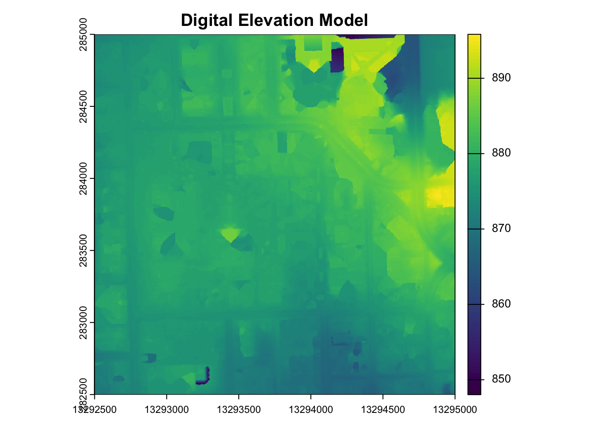
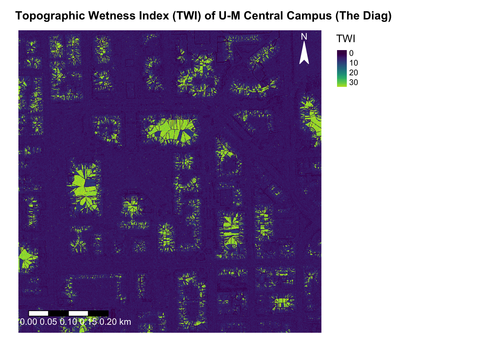

library(lidR)##
## Attaching package: 'lidR'## The following object is masked from 'package:terra':
##
## watershed## The following object is masked from 'package:sf':
##
## st_concave_hulllibrary(terra)
library(rayshader)
library(rgl)
library(raster)## Loading required package: sp##
## Attaching package: 'sp'## The following object is masked from 'package:lidR':
##
## wkt##
## Attaching package: 'raster'## The following objects are masked from 'package:lidR':
##
## projection, projection<-## The following object is masked from 'package:dplyr':
##
## selectlibrary(viridis)## Loading required package: viridisLitelibrary(tmap)las <- readLAS("Pointclouds_AnnArbor/292282.las")## Warning: There are 3299 points flagged 'withheld'.# Add coordinate system
###"NAD83(HARN) / Michigan South (ft) + NAVD88 height - Geoid12B
CRS("+init=epsg:8705")## Warning in CPL_crs_from_input(x): GDAL Message 1: +init=epsg:XXXX syntax is
## deprecated. It might return a CRS with a non-EPSG compliant axis order.epsg(las) <- 8705
# Understand what the area looks like
# plot(las)dtm <- rasterize_terrain(las, res = 1, knnidw(k = 6, p = 2), keep_lowest = F)## Warning: Interpolation of 280312 points failed because they are too far from
## ground points. Nearest neighbour was used but interpolation is weak for those
## points# To get an idea of the DTM (not final visualization)
plot(dtm, main = "Digital Elevation Model")
A topographic wetness index quantifies how topography controls the spatial distribution of soil moisture. A high TWI indicates areas where water tends to accumulate (ex. valleys, depressions, wetlands). A low TWI indicates areas with steeper slopes where water water tends to run off quickly (ex. hilltops, ridges).
\[
\text{TWI} = \ln \left( \frac{A_s}{\tan(\beta)} \right)
\] Where:
- \(A_s\) = upslope contributing area
(m² per unit contour length)
- \(\beta\) = local slope angle
(radians)
I will be calculating TWI for the Diag area of U-M central campus to visualize where flood-prone zones or stormwater management needs would be based on higher TWIs. This can be useful for students and faculty to help infer where water will flow, slow down, or pool after big rain/snow events.
# Compute slope in radians
slope <- terrain(dtm, v = "slope", unit = "radians")
# Compute flow direction
flowdir <- terrain(dtm, v = "flowdir", unit = "radians")
# Compute flow accumulation using terra's built-in function
flowacc <- flowAccumulation(flowdir)
# Avoid division by zero or log of zero
slope[slope == 0] <- 0.001
# Compute TWI
twi <- log(flowacc / tan(slope))
writeRaster(twi, "twi_manual.tif", overwrite = TRUE)
# Create final geovisualization
tm_shape(twi) +
tm_raster(
palette = viridis(256),
title = "TWI",
style = "cont"
) +
tm_compass(
type = "arrow",
position = c("right", "top"),
color.light = "white",
color.dark = "white",
show.labels = 1,
text.color = "white"
) +
tm_scale_bar(
position = c("left", "bottom"),
text.size = 0.8,
text.color = "white"
) +
tm_layout(
main.title = "Topographic Wetness Index (TWI) of U-M Central Campus (The Diag)",
main.title.size = 1,
main.title.fontface = "bold",
frame = FALSE,
legend.outside = TRUE,
legend.outside.position = "right",
)## stars object downsampled to 1000 by 1000 cells. See tm_shape manual (argument raster.downsample)
# Convert to matrix
dtm_mat <- matrix(values(dtm), nrow = nrow(dtm), ncol = ncol(dtm))
twi_mat <- matrix(values(twi), nrow = nrow(twi), ncol = ncol(twi))
# 3D plot (commented out for knit)
#twi_mat %>%
#height_shade(texture = viridis(256)) %>%
#add_shadow(ray_shade(dtm_mat), 0.5) %>%
#plot_3d(dtm_mat, zscale = 2, fov = 60, theta = 135, phi = 45,
#windowsize = c(1000, 800))Develop a research methodology guided by a LiDAR dataset (the one provided or data found from the list below) aimed at exploring its potential applications and insights. Reflect on the insights that can be drawn your visualization of this data. Critically analyze the advantages and complexities inherent in the utilization of 3D geovisualization. Additionally, provide an assessment of the trajectory of 3D technology, including immersive environments, within the academic and professional landscape. (Maximum 4 paragraphs)
My research methodology is to create a LiDAR-derived Digital Terrain Model (DTM) to calculate and visualize the Topographic Wetness Index (TWI) of U-M Central Campus (The Diag) to understand the flooding potential of the area. The topographic wetness index is a great way to map the spatial variability of wetness potential to identify zones prone to runoff accumulation and provide insight into flood risk, drainage design, and land use planning. My TWI map showcases the wetness of the diag indicating there are higher potentials for water accumulation near or in buildings, but overall pretty good storm water drainage potential. In 3D, the terrain’s form is more intuitive because the slopes and flow pathways are easier to see which communicates the spatial aspects much better. However, this added dimensionality requires extra computational power and an understanding of projection. Sometimes, 3d models can oversimplify or exaggerate features. In a professional context, 3D terrain models of TWI can help urban planners visualize potential flooding scenarios. In academic contexts, students can engage with the spatial relationships that are abstract in 2D representations to make informed decisions in research projects studying the area.